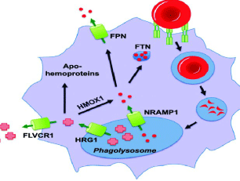
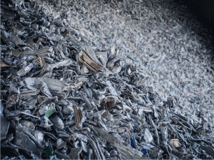
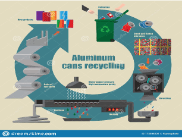
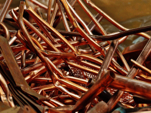
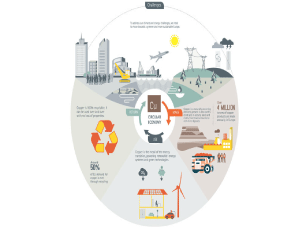
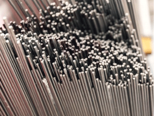
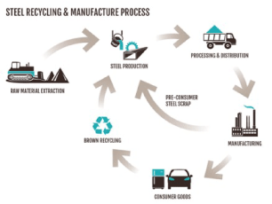

Naša
Galerija
O NAMA
U osnovnoj djelatnosti obrt DANI se bavi otkupom, preradom, reciklažom i prodajom metalnih sekundarnih sirovina. Vršimo reciklažu sekundarnih sirovina po najvišim standardima savremenom opremom i stručnim osobljem. Ekspertna logistička podrška našim klijentima sa mnogobrojnim radnim mašinama i kamionima.
{kind=link}
{kind=link}
{kind=link}
Otkup i reciklaža
Metala
-
Željezo
InformacijeReciklažom se metalni otpad čuva dalje od deponija gdje bi zagađivao zemlju i vodu, čime se ugrožava zdravlje ljudi i životinja. Reciklažom metala se također čuva velika količina energije. Metali se mogu reciklirati i opet koristiti bezbroj puta, što dovodi do znatnog čuvanja energije u dugom periodu.
-

Reciklaža i otkup
Vršimo otkup i reciklažu sljedecih:Otpadno željezo 3-6 mm (Fe E1), Otpadno željezo 6-10 mm (Fe E3), Otpadno željezo iznad 10 mm (Fe E3 SP.), Fe gus, Fe lamerino, Čelicna špena
-

Aluminium
InformacijeKada se aluminijum reciklira, koristi se 95% manje energije, dok se za reciklažu željeza i čelika koristi 74% manje energije a za bakar 85% manje energije. Pored čuvanja energije, upotrebom recikliranog metala se također čuva i vrijedan prirodni resurs koji bi se inače uzimao iz okoliša.
-

Reciklaža i otkup
Vršimo otkup i reciklažu sljedecihAluminij Al tvrdi čisti (dijelovi motora bez Fe), Aluminij meki čisti, Akumulatori, Otpadni lim 0-3 mm, Al. limenka, Al. uže čisto, Aluminij nečisti, Al. felge, Al. off set, Al. stranice, Al. profil čisti, Al. mjenjači, Al. profil bijeli (novi), Al profil bojeni, Al. profil s PVC
-

Bakar
InformacijeElektrični i elektronički otpad je najbrže rastuća kategorija otpada uz komunalni otpad, te stoga postoji potreba za njegovim učinkovitim zbrinjavanjem. Kabeli i žice su neophodni dijelovi elektroničke opreme. Recikliranje otpadnih električnih kablova usredotočuje se na ponovno dobivanje vrijednih metala – bakra
-

Reciklaža i otkup
Vršimo otkup i reciklažu sljedecihBakar Cu I prva klasa (guljena debela kabla), Bakar Cu II druga klasa (cijevi bez varova i boje, bakarni lim bez boje), Bakar Cu III treća klasa (paljeni bakar), Otpadna bronza (stilin bakra i kositra), Bronzana špena, Hladnjaci Ms + Cu, Hladnjaci Al + Cu, Hladnjaci Al
-

Prohrom
InformacijeInox, prohrom, rostfraj ili nerđajući čelik (njem. Rostfreier Stahl – nerđajući čelik) (eng. INOX – inoxidizing, što znači sprečavanje oksidacije, rđe ili truljenja), je čelik legiran u prvom redu hromom i niklom. INOX je moderan i atraktivan, higijenski i lako se čisti, otporan na koroziju, izdržljiv, dobar za održavanje.
-

Reciklaža i otkup
Vršimo otkup i reciklažu sljedecih:PK špena X-15, PK komadi X-15, PK špena HK30, PK komadi HK30, PK špena PL-23, PK komadi PL-23, PK špena PL-33, PK komadi PL-33 Elektromotori, Krom Cr, Prokrom PK, Cink Zn,